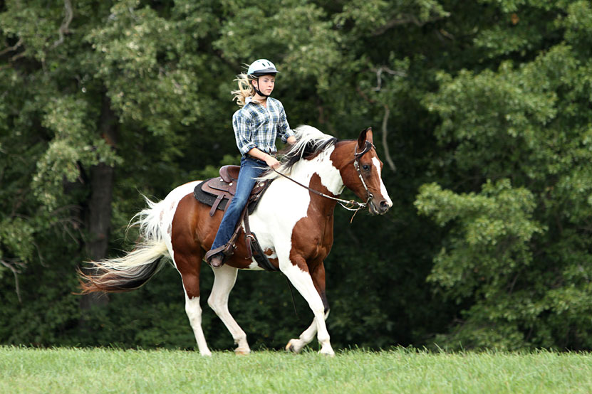

Welcome
From the outside, horseback riding may look like just sitting and that all a rider has to do is give the horse some simple instructions. In carrying the rider the horse is doing all the work, right? Wrong. There is far more to horseback riding than the casual observer might expect. And, there are benefits beyond simple enjoyment; physically, mentally and emotionally.
Physical
Riding develops balance and coordination. The movements required to cue a horse require body awareness. Riding also uses many muscles; most importantly the leg, abdominal, shoulder and back muscles. Riding does not depend on strength alone, but strong flexible muscles aid in stability and coordination. Most new riders will find that their inner thigh muscles, particularly the gracilis muscle, become sore, but the muscle will quickly become stretched and strengthened. Increase the speed and distance you ride and you’ll increase the intensity of your work out and burn more calories.
Horseback riding is a sport that people of any age can participate in. As many people approach their middle years they may finally have the time and resources to realize their dreams of riding or owning a horse. With proper instruction and guidance there is no reason why people in their forties and beyond can’t learn to ride or drive. Lots of seniors have ridden or driven into their ‘golden years’ with a favorite equine companion.
As you groom, clean stables, carry saddles, equipment or bales of hay you are also doing weight bearing exercise that helps maintain bone mass. Although riding, grooming and mucking out is good exercise, many riders who wish to compete at advanced levels find it beneficial to lift weights and do core strength training such as yoga and Pilates.
Mental
At first you may feel that just learning to stay on and steer the horse is a challenge. When that becomes easy, many more learning opportunities present themselves. As you progress with riding and horse ownership you will always have questions and problems. Even the most experienced equestrian would admit there is always something new to learn.
Research has shown that lifelong learning may prevent memory loss. Just like your muscles, your brain needs exercise to keep young and supple. Riding provides an active avenue for keeping your brain exercised. Riding can provide many opportunities for success. Whether you learn to post the trot or receive high marks in a dressage test, you’ll feel good about what you are doing.
Emotional/Spiritual
For many a horse is a connection with nature whether they ride in the ring or down the trail. Many people find companionship and solace while working with their horse. Although riding can present its frustrations and challenges, most people find it a relaxing pastime. The camaraderie of people who enjoy similar activities is also appealing. It’s fun to get together with friends for a lesson, team endeavor such as mounted games or drill riding, or a trail ride.
If you crave solitude, riding or driving can provide that as well. Many horse owners feel their horse is somewhat of a kindred spirit in tune with their own feelings and emotions; more so than any human companion. In times of stress a horse can be a quiet friend, who is without judgment or guile.
